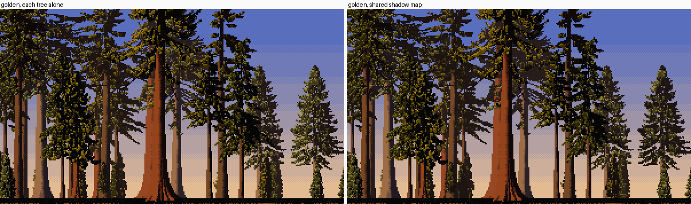
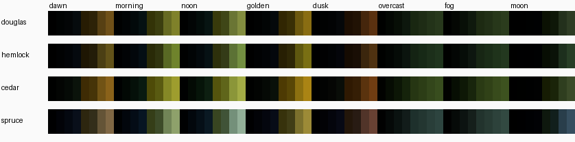
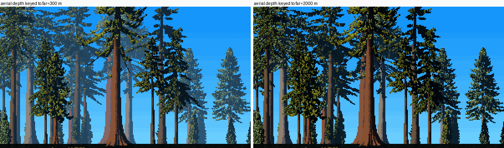

5. A stand, and its hours
Back to the tutorials. Code: conifer.stand, paint.shadow_T and palette.py, in ~/work/pixelart-studies/elements/conifers/.

Sheet E: 34 mixed trees at 0.35 m/px, at morning, golden, overcast and dusk. It's the same index canvas each time; only the palette and the sun's elevation change.
A stand is not 34 sprites pasted together. Three things make it one picture: the trees shade each other, they share one value plan, and distance lives in the palette.
1. One shadow map for every tree
Each foliage point needs to know how much foliage lies between it and the sun. I took the method from vox-trees' NOTES, an opacity shadow map:
- project every point onto a grid perpendicular to the sun;
- sort each cell sunward-first;
- a point's rank in its cell is the number of points shading it.
From paint.shadow_T:
e1 = np.cross(L, up); e1 /= np.linalg.norm(e1); e2 = np.cross(L, e1)
u = p @ e1; v = p @ e2; w = p @ L
iu = np.floor((u - u.min()) / cell).astype(np.int64)
iv = np.floor((v - v.min()) / cell).astype(np.int64)
key = iu * (iv.max() + 1) + iv
order = np.lexsort((-w, key)) # per cell, sunward first
ks = key[order]
start = np.r_[0, np.flatnonzero(np.diff(ks)) + 1]
rank = np.arange(len(ks)) - np.repeat(start, np.diff(np.r_[start, len(ks)]))
before = np.empty(len(p)); before[order] = rank
# (then blended with the neighbouring cells' counts, to soften)
return np.exp(-k * before)
Scale k to point spacing, or the answer depends on sampling density. My first version gave zero direct light to 75% of the points. I found it by printing percentiles of each light term:
k = P.get("shadow_k", 0.5) * step ** 2 / cell ** 2 # step: point spacing; cell: shadow-grid size
For a stand, build one map from all the trees' foliage together (conifer.stand), and give each tree its slice:
allp = np.concatenate([t.fol["p"] for _, t in objs])
Tall = paint.shadow_T(allp, L, cell, P.get("shadow_k", 0.5) * step ** 2 / cell ** 2)
# each tree: T = min(T_own, T_stand ** 0.7)

Golden hour, each tree shadowed alone (left) and with the shared map (right). The middle distance falls into the shadow family, and the lit trees stand out against it.
2. One value plan for the stand
How-to 2 sets the lit threshold as a quantile of the direct light, lit_frac 0.42. Per tree, that lights every tree equally, including the ones standing in their neighbours' shade. So take the quantile over the whole stand:
dv = np.concatenate([G["dir"][G["mat"] == paint.FOL] for _, _, _, G in passes])
thr = max(float(np.quantile(dv, 1 - lf)), 1e-3)
for d, t, Pi, G in passes:
st = paint.quantize(G, dict(Pi, lit_frac=None, lit_thr=thr), t, mpp)
3. The palette is the light
Every foliage ramp has 8 steps:
- shadow family 0–3: sky light only, walking from black toward the sky colour;
- lit family 4–7: sun on needles. The dark end leans warm brown-olive, after Ferrari's (95,71,0); the top takes the species' sunlit tip colour.
The ramps are computed in linear light from a species albedo, the hour's sun and sky colours, and a sun strength (palette.foliage_ramp):
for b, warm in ((0.26, 0.75), (0.4, 0.4), (0.85, 0.0), (1.05, 0.0)):
base = A * (S * b * ks * 1.9 + K * 0.25) # albedo x (sun + sky)
lum = base @ np.array([0.2126, 0.7152, 0.0722])
ol = OL / (OL @ np.array([0.2126, 0.7152, 0.0722])) * lum * S / S.max()
base = base * (1 - s["olive"]) + ol * s["olive"] # Ferrari paints sunlit conifer olive
if warm > 0:
base = base * np.array([1 + 0.45 * warm, 1.0, 1 - 0.85 * warm])
...

The foliage ramps, rows Douglas-fir, hemlock, cedar, spruce; columns dawn, morning, noon, golden, dusk, overcast, fog, moon.
Overcast and fog have no sun family: the "lit" steps are sky-lit tops at low contrast. That's the westside's usual light. The naturalist: "soft, overcast and blue-grey... the conifers read almost black-green".
4. Aerial depth, in the palette
Each tree's ramp is mixed toward the horizon colour by its distance. The darks lift most and the lights hold longer, as the master-copy student measured on Ferrari. The far darks get a slight violet bias, as the analysis student found (palette._aerial):
lum = ramp @ np.array([0.2126, 0.7152, 0.0722])
dark = 1 - np.clip(lum / (lum.max() + 1e-6), 0, 1)
amt = np.clip(depth * (0.55 + 0.45 * dark) + fog, 0, 0.97)[:, None]
return ramp * (1 - amt) + Hc * np.array([1.05, 0.95, 1.1]) * amt
depth is the tree's distance divided by far. And here's a choice rather than a rule:

far = 300 m (left) and 2000 m (right).
At 300 m, 60 m of forest reads as kilometres: physically wrong, and I called it a bug that night. Looking again today, the left is the more painterly picture: a ghost ladder of hazed trunks, which the critic praised in my first stand. The sheets use 2000 m. If your scene wants mood more than scale, turn it down.
Parameters
lit_frac 0.42 over the stand, shadow_k 0.5, shadow cell max(2·mpp, 0.3 m), far 2000 m (4000 m for the ground), bounce 0.12 on wood, fog 0.3 for the fog hour.
Limits
- The mid-distance trunks are ruled columns, and the stand stands on a ruled black line.
- In iso, the haze is keyed to ground depth, not to distance from the eye, so it turns blue too fast. Random species mixing makes confetti; real stands come in patches.
- A 34-tree stand takes about 80 s in numpy.